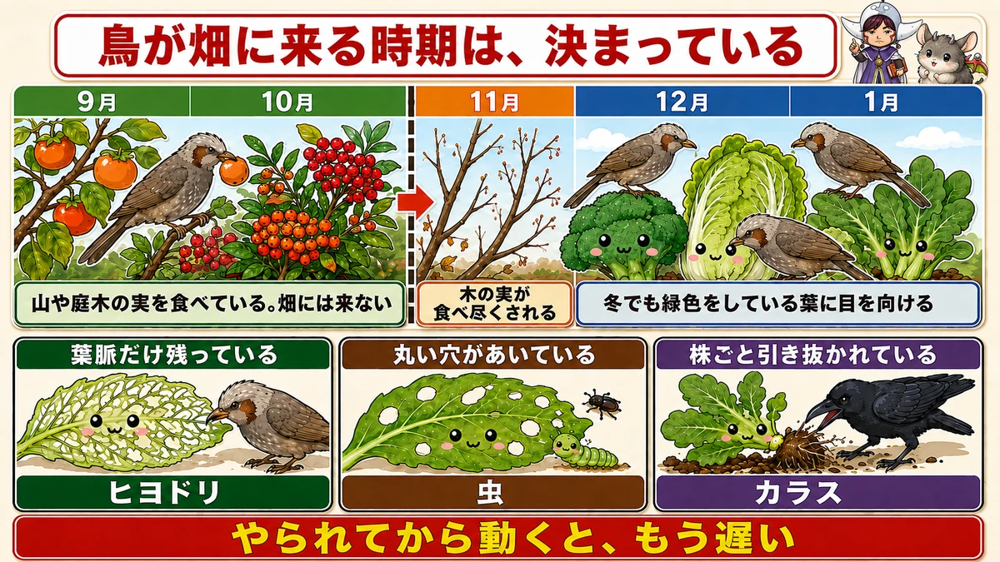
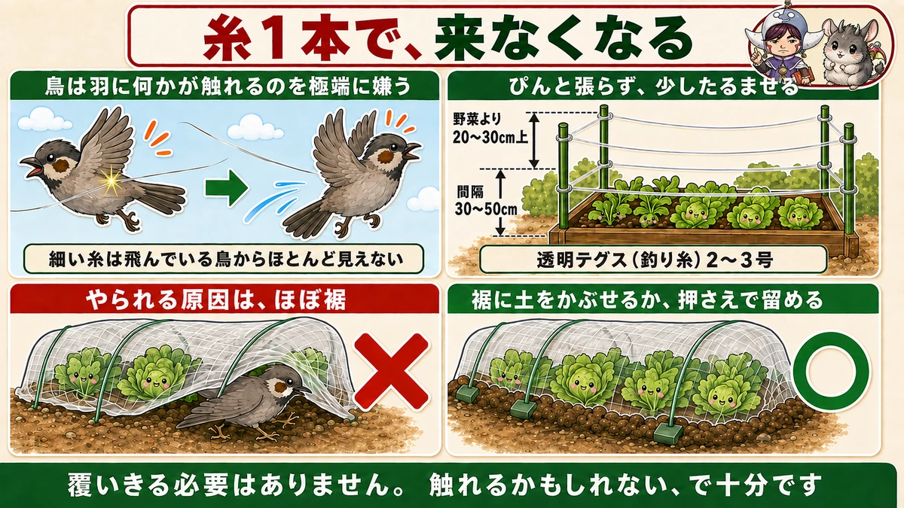
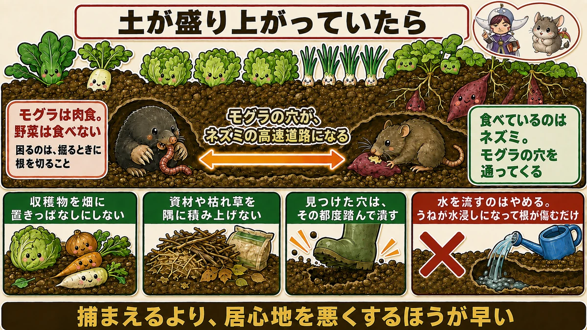

11月、山の実がなくなると畑に来ます🐦 ヒヨドリの見分け方
🐦「順調だったブロッコリーが、一晩で葉だけになった」
🐦「防虫ネットをしていたのに、やられた」
🐦「畑に穴があいて、土が盛り上がっている」
どうも、8150（えいこう）です🌱 家庭菜園歴8年、理科の教員免許を持っていて、有機・無農薬で野菜を育てています。
今日は、鳥と獣の話です。
先に、この記事でいちばん言いたいことを言っておきますね。
★11月から、急に鳥が来ます。
夏も秋も、鳥の被害はほとんどありません。★なのに11月に入ったとたん、ブロッコリーや白菜がやられ始めます。
理由がはっきりしています。★山の木の実が、この時期に食べ尽くされるからです。
なぜ11月なのか

鳥の食べ物の順番
鳥にも好みの順番があります。★秋のうちは、山や庭木の実を食べています。柿、ピラカンサ、ナンテン、木の実。甘くて栄養があるものが先です。
それが★11月から12月にかけて、食べ尽くされます。
そこで次に目を向けるのが、★冬でも緑色をしている葉です。畑の野菜がまさにそれです。
つまり、時計のように来る
だから鳥の被害は、★毎年ほぼ同じ時期に始まります。
私の畑では、★11月の半ばが目安です。それまで一度も来なかったのに、ある日から毎朝います。
★「そろそろ来る」と分かっているだけで、対策が間に合います。やられてから動くと、もう遅いんです。
犯人は、たいていヒヨドリです
見分け方
灰色っぽくて、★ムクドリより少し大きく、ほおに茶色い部分があります。鳴き声は「ヒーヨ、ヒーヨ」と大きくて、うるさいくらいです。
★数羽から十数羽で来ます。1羽が見つけると、すぐ仲間が集まります。
食べ方でも分かる
犯人が誰かは、食べ跡でも分かります。
- ★葉がちぎれて、太い葉脈だけ残っている … ヒヨドリ
- ★葉に丸い穴があいている … 虫
- ★株ごと引き抜かれて散らかっている … カラス
ヒヨドリは★やわらかいところだけをむしり取ります。だから葉脈が残ります。★これが見えたら、ほぼ確定です。
糸1本で、かなり防げます

なぜ糸が効くのか
これは知っておくと面白いところです。
★鳥は、羽に何かが触れるのを極端に嫌います。飛べなくなることが命に関わるからです。
そして★細い糸は、飛んでいる鳥からはほとんど見えません。見えないものに羽が触れる。これが鳥にとっていちばん怖い状況です。
★だから、糸を張るだけで来なくなります。網で覆いきる必要はありません。
張り方
- ★透明のテグス（釣り糸）を使う。太さは2〜3号くらい
- ★うねの上、野菜より20〜30cm高いところに張る
- ★間隔は30cmから50cm。びっしり張らなくていい
- ★支柱を四隅に立てて、その間に渡すだけ
★ぴんと張らず、少したるませるほうが効きます。風で揺れて、より嫌がられます。
ネットのほうが確実な場合
ブロッコリーや白菜など、★どうしても守りたいものには防虫ネットをそのままかけておくのが確実です。
このとき大事なのは★裾です。裾が浮いていると、鳥は下から入ります。★ネットの裾に土をかぶせるか、マルチ押さえで留めてください。
★「ネットをしていたのにやられた」の原因は、ほぼ裾です。
土が盛り上がっていたら

モグラとネズミは、別ものです
畑の土が細長く盛り上がっていたら、モグラです。★でもモグラは、野菜を食べません。
モグラが食べるのは★ミミズや虫です。肉食です。
では何が困るかというと、★トンネルを掘るときに根を切ってしまうことです。だから急に株が元気をなくします。
本当に食べているのはネズミ
問題は、★モグラのトンネルをネズミが使うことです。
ネズミは草食です。★さつまいも、じゃがいも、豆類を食べます。モグラの穴が高速道路になって、畑の奥まで入ってきます。
つまり★モグラの被害の多くは、ネズミとの合わせ技です。
できる対策
完全に防ぐのは難しいので、現実的なところを書きます。
- ★収穫物を畑に置きっぱなしにしない
- ★資材や枯れ草を畑の隅に積み上げない（巣になります）
- ★穴を見つけたら、その都度踏んで潰す
★えさと隠れ場所を減らすのが、いちばん効きます。捕まえようとするより、居心地を悪くするほうが早いです。
ひとつ、やってはいけないことも書いておきます。★穴に水を流し込むのは、やめたほうがいいです。
うねの中が水浸しになって、野菜の根が傷みます。★モグラは別の穴から出るだけで、こちらの畑だけが痛みます。私も一度やって、うねをひとつ台無しにしました😇
学ぶ：なぜ冬の野菜だけ狙われるのか🔬
理科の時間です。
冬の畑で、鳥にとって★いちばんごちそうなのは、白菜やキャベツの内側です。
理由は★甘いからです。
野菜は寒さに当たると、凍らないように★体の中の水分に糖を溶かし込みます。糖が入った水は、真水より凍りにくくなるからです。道路にまく凍結防止剤と、同じ考え方です。
つまり★寒くなるほど、野菜は甘くなります。人間がおいしいと感じる時期は、鳥にとってもごちそうの時期です。
★「今年の白菜、甘くなってきたな」と思ったころに鳥が来るのは、偶然ではありません。
お子さんと一緒なら、★同じ品種の葉物を、寒さに当てたものと、不織布で守ったものの2つ用意して、食べ比べてみてください。★はっきり甘さが違います。
まとめ
ここまで読んでくださって、ありがとうございました。
鳥は、来る時期が決まっています。だから先回りできます。
- ★11月から鳥が来る。山の木の実が食べ尽くされるから
- ★犯人はたいていヒヨドリ。葉脈だけ残っていたら確定
- ★糸1本で防げる。鳥は羽に何かが触れるのを極端に嫌う
- ★テグスを野菜より20〜30cm上に、30〜50cm間隔で。少したるませる
- ★ネットをかけるなら、裾を土で埋める。やられる原因はほぼ裾
- ★モグラは野菜を食べない。食べているのは穴を使うネズミ
- ★えさと隠れ場所を減らすほうが、捕まえようとするより効く
- ★寒さで野菜が甘くなるから狙われる。おいしい時期は鳥も知っている
全部やろうとしなくて大丈夫です。まずは★11月の半ばに、うねの上へ糸を2本渡してみてください。それだけで、朝の景色が変わります🐦
次回は、緑肥の話。★何も植えない冬のうねに、あえてタネをまく理由をお話しします🌾
防虫ネット
鳥にも効きます。やられる原因はほぼ裾なので、必ず土で埋めてください。


アーチ支柱
ネットを浮かせる骨。葉に触れていると、その上から食べられます。

マルチ押さえピン
裾を留めるのに使います。数は多めに用意してください。

園芸用支柱クリップ
支柱を四隅に立てて、その間にテグスを渡すときに便利です。

あわせて読みたい